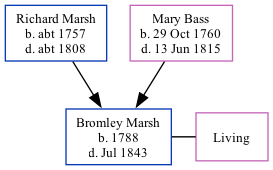

Bromley Marsh 1788 - 1843
[ Home ] | [ Calendar ] | [ Surnames Index ] | [ Family History ]The child of Richard Marsh and Mary Bass, Bromley Marsh, the four times great-uncle of Nigel Horne, was born in Elham, Kent, England in 17881. He was married to Mary Glover.
He died in Jul 1843 in Faversham, Kent, England2 and was buried there at St Mary of Charity Church, Church Road on Jul 30, 18433.
Parents
- Richard was born c. 1757
- Mary was born on Oct 29, 1760
Citations
- Kent Burials - Findmypast
- England & Wales, FreeBMD Death Index: 1837-1915 Online publication - Provo, UT, USA: The Generations Network, Inc., 2006.Original data - General Register Office. England and Wales Civil Registration Indexes. London, England: General Register Office. © Crown copyright. Published by permission of the Cont
- Kent Burials - Findmypast
Media
Kent Burials - GBPRS/CANT/D/95300547
Family Tree
Generated by Ged2Site. Last updated on Jul 20, 2025